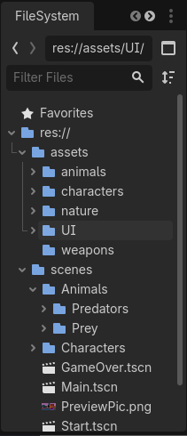
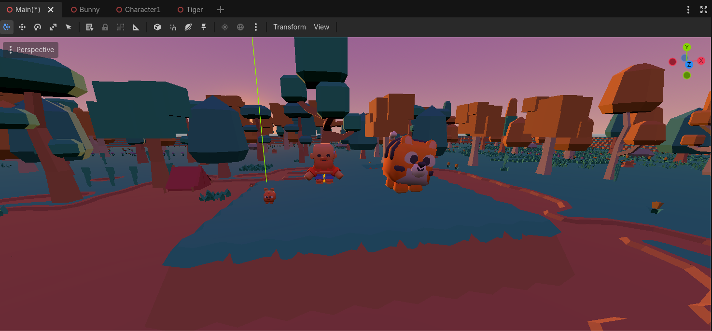

Video Tutorials
━━━━━━━━━━━━━━━━━━━━Section 2 Videos
Watch: "3D Project Setup & Environment"
Section 2: 3D Project Setup & Environment
Create a 3D project, import Kenney assets, and build a simple forest environment for your survival game.
Creating Your 3D Project
- Open Godot and click "New Project"
- Name your project "Forage Fever"
- Choose a location on your computer
- Select "Compatibility" as the renderer
- Click "Create & Edit"
Where to Find Free 3D Assets
All of these sites offer high-quality 3D assets. Many are under the CC0 license (free for any use, no attribution required) or have very permissive terms.
🎮 Kenney.nl
Recommended: The assets I'll be using in my example. Kenney provides beautifully designed, low-poly 3D assets in consistent art styles. All CC0.
Visit Kenney.nl →🎯 Itch.io - Free 3D Assets
Huge Variety: Over 7,000 free 3D asset packs. Many creators offer their work for free or "pay what you want." Great for finding unique styles.
Browse Itch.io →📦 DevAssets.com
Polished Packs: High-quality, ready-to-use asset packs. "Pay what you want" or grab them for free. Commercial and non-commercial use allowed.
Visit DevAssets →🎨 Kay Lousberg (KayKit)
Stylized & Consistent: Beautiful, hand-crafted asset packs with a consistent art style. Includes characters, environments, and tools. Very generous licensing.
Browse KayKit →Organizing and Importing
- In the FileSystem dock, right-click and select "Create Folder"
- Create a folder named "assets"
- Inside assets, create subfolders:
- nature/ - for trees, rocks, terrain, etc.
- animals/ - for animal models
- characters/ - for player character
- weapons/ - for hunting tools
- Open your file explorer and navigate to the extracted asset pack folders
- Drag and drop the .glb and .png files into the appropriate asset folders

Building the Ground
- Create a new scene with a Node3D root
- Rename it to "Environment"
- Add a child node: MeshInstance3D
- Rename it to "Ground"
- In the Inspector, click the "Mesh" dropdown
- Select "New PlaneMesh"
- Set the "Size" to 20 x 20 (for a 20x20 meter area)
- Add a StaticBody3D as a child of Ground
- Add a CollisionShape3D as a child of StaticBody3D
- Set the shape to "New BoxShape3D" and size it to match the ground
- Rotate the ground 90 degrees on the X axis so it's flat
Building a Forest Environment
- In the FileSystem dock, find a tree model in assets/nature/
- Drag it into the viewport to add it to the scene
- Copy and paste the tree (or duplicate it) to create a small forest
- Position trees around the terrain
- Add a DirectionalLight3D node to simulate sunlight
- Add a WorldEnvironment node for sky and ambient light
- In the WorldEnvironment Inspector, click "New Environment"
- Set the "Background" to "Sky" and choose a sky color
